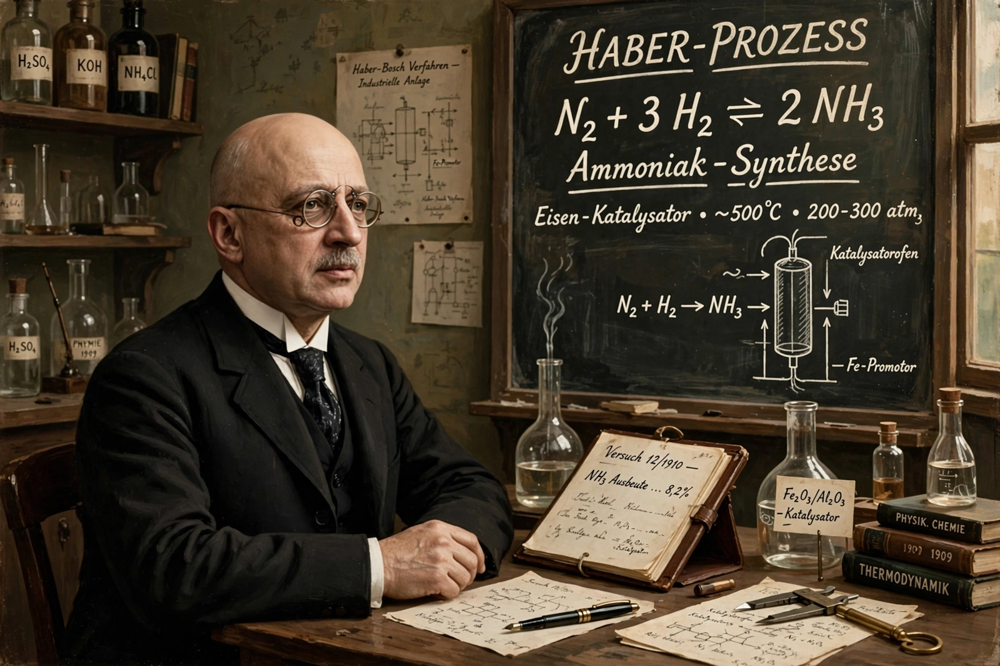

Fritz Haber (9 December 1868 – 29 January 1934) was a German chemist who received the Nobel Prize in Chemistry in 1918 for the Haber process for synthesising ammonia from nitrogen and hydrogen gases.

With Carl Bosch at BASF, Haber's tabletop ammonia synthesis (1909) was industrialised, enabling nitrogen fertilisers that sustain billions — 'bread from air' — and also explosives manufacture.
In the First World War Haber directed Germany's chemical weapons programme, overseeing the first chlorine gas attack at Ypres (1915), a legacy that remains deeply controversial. He later directed the Kaiser Wilhelm Institute in Berlin; of Jewish descent, he resigned in 1933 under Nazi pressure and died in exile.